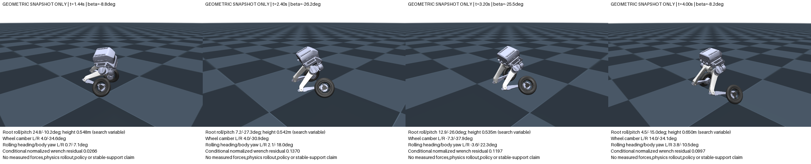
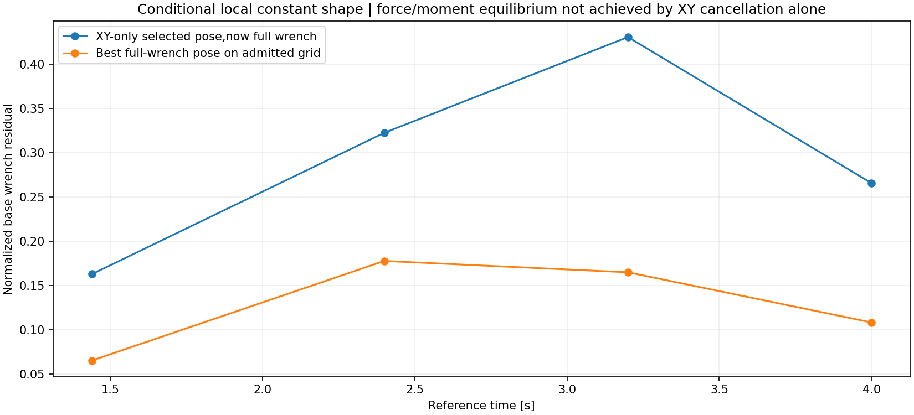
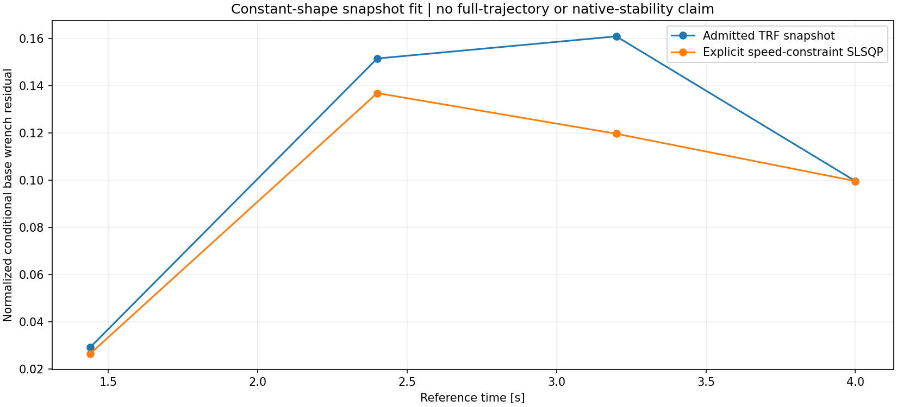

The authored TRON1 kinematics allow different left/right rolling headings through root pitch/roll and independent abduction. Four conditional snapshot screens do not produce a balanced time-varying reference. The task remains unfinished. No new policy training,friction sweep or native stability claim is made.

These four pictures are separate inverse-kinematic reconstructions of the original car body XY/yaw samples. They are not an animated reference or a controller rollout. Both ideal cylinder support points lie on the floor;nonwheel floor intersections,opposite-leg intersections and authored joint-limit violations are rejected. Neither geometric tangency nor model-allocated normal loads establish measured support. Opaque visual meshes and a common 1.9 m camera distance,world camera angles and relative look-at translation are retained;robot collision visuals are hidden.
Root orientation R = Rz(yaw) Ry(pitch) Rx(roll)
Wheel abduction alpha_i,i in {L,R};both authored axles use local+Y
Yaw-normalized axle a_i = [sin(pitch)*sin(roll+alpha_i),
cos(roll+alpha_i),
cos(pitch)*sin(roll+alpha_i)]
world camber gamma_i = asin(a_i,z)
rolling heading/body yaw delta_i = atan2(-a_i,x,a_i,y)
With zero root pitch,the sampled upright/yaw-only family cannot change the wheel rolling heading by abduction alone. Nonzero pitch creates a coupling. For example,roll=30 deg,pitch=30 deg,abduction L/R=0/20 deg gives rolling heading offsets about -16.10/-30.79 deg. The geometry is checked against the original MuJoCo FK;no steering joint is added. Abduction and world camber are different quantities once the root tilts.
Analytic two-link reconstruction keeps each wheel's body-longitudinal position and floor tangency for the initial grid. The later fit additionally frees each wheel's fore/aft location. Root XY and projected body heading remain the original car mapping. Heights 0.45–0.75 m and root angles within +/-30 deg are explored sampling/search bounds,not task gates or a global reachability claim. They do not introduce an absolute-height policy reward. The original native nominal acceptance criteria remain unchanged.
| Time(s) | Body beta(deg) | Yaw-only XY proxy residual/mg | Spatial XY proxy residual/mg | Same XY-selected pose,full wrench | Best grid full wrench | Retained constrained fit wrench | Final SLSQP stop |
|---|---|---|---|---|---|---|---|
| 1.44 | -8.81 | 0.6216 | 0.001033 | 0.1626 | 0.0650 | 0.0266 | Iteration limit reached |
| 2.40 | -26.18 | 0.7000 | 2.445e-14 | 0.3222 | 0.1775 | 0.1370 | Inequality constraints incompatible |
| 3.20 | -25.49 | 0.6413 | 0.01065 | 0.4304 | 0.1647 | 0.1197 | Inequality constraints incompatible |
| 4.00 | -8.19 | 0.6614 | 0.0005015 | 0.2654 | 0.1081 | 0.0997 | Inequality constraints incompatible |
Each sampled time has 3,600 attempted postures:1,142 pass the geometric and fully-sliding admission,2,408 fail reachability/joint limits,and50 intersect opposite-leg collision geoms. The force-direction screen permits any nonnegative left/right load split,including single-wheel support. It assumes both material support points slide under isotropic saturated Coulomb friction at mu=0.7. The XY proxy target is mass times the original root acceleration,with total normal mg. It is not the whole-body COM demand.
The full-wrench check instead computes required generalized inertial/gravity force M(q)*qacc+C(q,qvel) with native recursive Newton–Euler arithmetic. It uses locally constant roll,pitch,height and leg shape,original root XY/yaw twist,and longitudinal-rolling wheel spin and its sampled acceleration. Contact-point Jacobians map candidate normal/tangential forces into the unactuated floating-base force and moment. Total normal is the required vertical generalized force. Thus this check changes both the force target to the full inertial model and includes moment balance;the table is not a pure moment-only ablation.
E_wrench = sqrt( ||Delta F / (m*g)||^2
+ ||Delta tau_root_local / (m*g*0.5 m)||^2 )
This is a dimensionless diagnostic with an explicit 0.5 m moment normalization. It is not XY tracking error,a success threshold or a native-force mismatch metric. The initial XY-only choices can have almost zero horizontal proxy residual while their complete wrench residual is0.163–0.430. Even the best admitted grid poses retain0.065–0.178 full-wrench residual.

The seven fit variables are root roll/pitch,left/right abduction,height,and independent left/right wheel fore/aft shifts. The same force law and wrench objective are retained. A bounded Powell stage retains its best admitted evaluated posture rather than trusting its potentially worse final iterate. TRF then uses the six normalized residual components. Finally,SLSQP expresses each material sliding speed at least0.01 m/s as an explicit inequality,so it can attempt steps along the speed boundary. The0.01 m/s margin selects a fully-sliding snapshot family;it is not a new task acceptance criterion.

All four SLSQP runs stop without successful convergence:one reaches its iteration budget and three report incompatible inequalities. The reported0.027–0.137 residuals are retained admitted evaluations,not certified solutions. Dense changes of geometry,static/sliding mode switches and a smooth time-varying posture trajectory remain unresolved. A bounded finite search cannot establish task impossibility.
Most importantly,a snapshot fit omits the additional leg and root-shape velocities,accelerations and angular momentum generated while moving between these poses. It also does not certify motor/passive equivalence or native multi-point contact. Joining the four pictures into an animation would not resolve those omissions. The next reference stage needs explicit rolling/sliding/support modes and time-coupled whole-body dynamics before native learning and nominal validation can establish completion. The previous policy/contact-reward comparison remains a separate completed experiment.
Eleven CPU tests pass,including authored FK,independent wheel placement,both geometric supports,world/local angular conventions,COM-cross-product point velocity,inverse-force versus mass-matrix-plus-bias arithmetic,and actual static robot weight. All36 retained grid/fit snapshots are independently recomputed. Direct world force sums and root-local cross-product moments agree with the contact Jacobian wrench within3.1e-14;mass-matrix-plus-bias required forces agree within5.7e-14. The four-panel image and force plots were inspected. This verification is not a native support episode.
python scripts/audit_spatial_camber_postures.py --reference results/contact_wheel_axis_20261025_v1/reference.npz --model outputs/car_failure_sideslip_20261015/raw/mujoco_model.xml --config config/spatial_camber_posture_audit_v1.json --output-dir /tmp/spatial-postures python scripts/audit_spatial_camber_wrenches.py --reference results/contact_wheel_axis_20261025_v1/reference.npz --model outputs/car_failure_sideslip_20261015/raw/mujoco_model.xml --postures /tmp/spatial-postures --output-dir /tmp/spatial-postures/wrench python scripts/fit_spatial_wheel_postures.py --reference results/contact_wheel_axis_20261025_v1/reference.npz --model outputs/car_failure_sideslip_20261015/raw/mujoco_model.xml --wrench /tmp/spatial-postures/wrench --config config/spatial_wheel_placement_fit_v1.json --output-dir /tmp/spatial-postures/placement_fit python scripts/refine_spatial_wheel_postures.py --reference results/contact_wheel_axis_20261025_v1/reference.npz --model outputs/car_failure_sideslip_20261015/raw/mujoco_model.xml --initial-fit /tmp/spatial-postures/placement_fit --output-dir /tmp/spatial-postures/placement_TRF python scripts/refine_spatial_wheel_postures_sqp.py --reference results/contact_wheel_axis_20261025_v1/reference.npz --model outputs/car_failure_sideslip_20261015/raw/mujoco_model.xml --initial-fit /tmp/spatial-postures/placement_TRF --output-dir /tmp/spatial-postures/placement_SQP
Geometric grid and XY proxy · Complete conditional wrench checks · Powell attempts · TRF attempts · SLSQP status and retained postures · Independent numerical verification · CPU tests · Visual review · Previous native PPO/contact-duration results.
Analytic geometry and inverse-force source · Verifier · Sampling configuration. No remote GPU job,model/weight upload or friction sweep is launched in this offline stage.